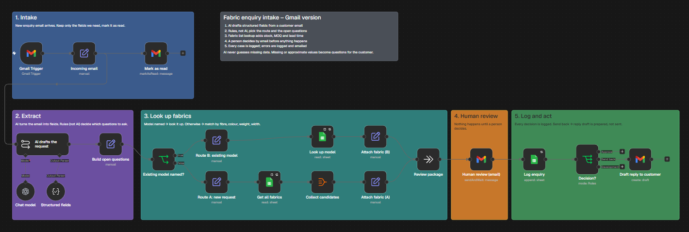
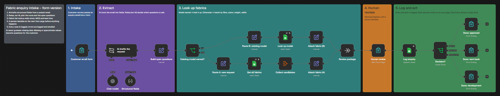
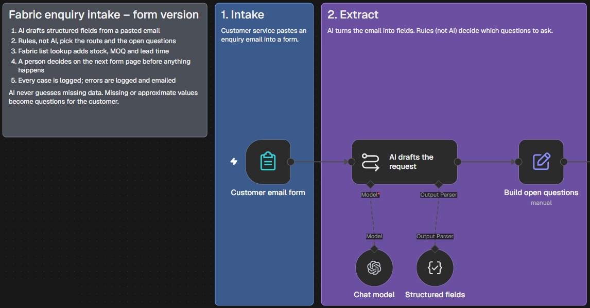
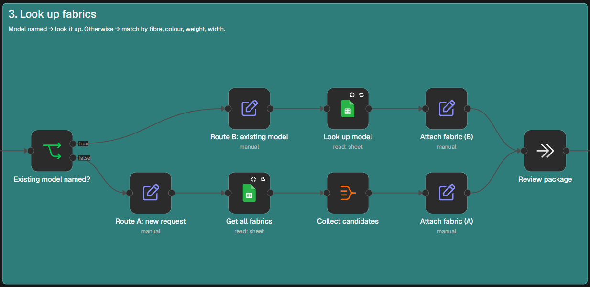
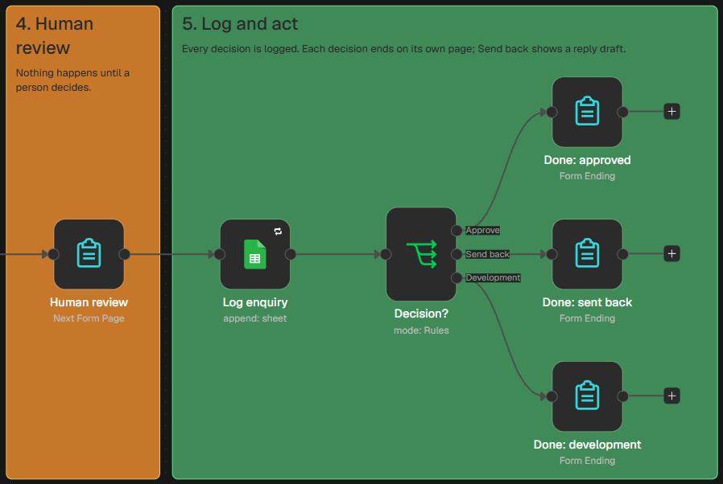

詢價信有兩種，但寫法有一百種
紡織公司的客服每天收到詢價信。有的客戶直接報型號要追加，有的只描述想要的布：黑色、亞麻、做襯衫、大約 160 克。信裡常常缺數量、缺交期，或只寫「大約」。客服要先讀懂、再去查有沒有現成的布、再決定下一步交給誰。
這個案例是織序裡「客服整理需求」那一段的延伸：織序用純前端模擬了整條交接流程，這裡則把最前面的一小段，接上真的信箱、真的試算表和真的語言模型，看它實際跑起來會遇到什麼。
客戶寄來一封寫得很隨意的詢價信。流程用 AI 把它整理成欄位，用固定規則決定走哪條路、還缺什麼要問，去布料表查庫存與交期，再寄一封審核信給負責的人。人選了決定之後，才寫入紀錄；需要回頭問客戶時，回信草稿已經備好，但不會自己寄出。這是在 n8n Cloud 上做的可運作原型，資料全部是虛構的。

左右滑動看完整流程。紡織公司的客服每天收到詢價信。有的客戶直接報型號要追加，有的只描述想要的布：黑色、亞麻、做襯衫、大約 160 克。信裡常常缺數量、缺交期，或只寫「大約」。客服要先讀懂、再去查有沒有現成的布、再決定下一步交給誰。
這個案例是織序裡「客服整理需求」那一段的延伸：織序用純前端模擬了整條交接流程，這裡則把最前面的一小段，接上真的信箱、真的試算表和真的語言模型，看它實際跑起來會遇到什麼。




一開始我讓 AI 同時決定「要問客戶什麼」。用同一組測試信跑了三輪，每一輪都有一兩封出錯，而且錯的地方不固定：客戶明明寫了 200 公尺卻要求確認、把客戶問我們的問題當成我們要問的、把數量和克重搞混。提示越寫越長，它越容易顧此失彼。
後來把這件事改成規則：欄位是空的就問；客戶在數字前寫了 around、about 這類字就請他確認；有型號時，克重和幅寬查表就有，不問。改完之後，同一封信每次產生的問題都一樣。AI 只留下它做得穩的事，就是把亂的信翻成欄位。
客戶寫「100% linen」，布料表寫「Linen 100%」，電腦會認為是兩件事。所以多加一個纖維欄位，限定 AI 只能回傳固定的五個詞之一，後面的比對交給規則。客戶寫了清單以外的纖維，例如絲，成分照抄、纖維留空，查表時自然查不到，交給人判斷。
測試時我在表單裡亂打了一串數字，結果審核畫面列出幾乎整張布料表。原因是比對規則寫成「客戶沒寫的條件就不篩」，而這封信什麼都沒寫，等於全部放行。這比查無結果還糟，因為它看起來像有結果。
現在查表有三種明確的結果：列出符合的布料；有條件但沒有符合的，顯示 NO MATCH，適合轉開發；信裡沒有任何可搜尋的資訊，顯示 NOT SEARCHED，適合退回問客戶。
第一版用篩選節點比對布料。測試一封要紅色絲布的信時，沒有任何布符合，流程就在那一步停下來：沒有審核畫面、沒有紀錄、沒有通知。而「我們沒有這種布」恰好是最需要人處理的情況。
修法是調換順序：先把整張表收成一包，再從包裡挑。挑完是空的，仍然是一包，流程會繼續走到審核。代價是比對規則從畫面上看得見的五個條件，變成一段表達式，可讀性較差；對詢價流程來說，不漏信比好看重要。
審核的人不需要登入 n8n，在信箱裡看完就能決定。同一個審核連結不能回答兩次。退回時，流程用待確認問題組好一封回信，掛在客戶原信的對話底下，收件人也帶好了，但停在草稿。客戶沒留名字時，稱呼會改用通用寫法，不會空著。
有一次修改時，我把另一個節點的文字貼進了 AI 的提示。送出表單的人只看到「請再試一次」，看不出原因。從執行紀錄點進去，直接顯示是哪個節點、缺了什麼資料，改回來重新發布就恢復了。這次不是刻意製造的測試，是錯誤處理第一次派上用場。
包含指名型號、指名不存在的型號、指名缺貨的型號、只描述特性、條件寬鬆到有兩筆符合、規格符合但已停產、布料表沒有的纖維、沒有署名、空白信，以及亂打的內容。兩個版本都在發布狀態下，用真的信件和表單從頭跑到尾。這是我自己做的功能測試，沒有量過大量信件下的準確率。